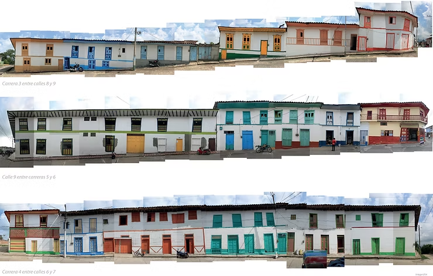

1. Selecciona tu Especialidad

Jornada Humanitaria en El Cairo, Valle del Cauca
Fundación "Tejas para mi Pueblo" • Paisaje Cultural Cafetero
Atención Móvil por Especialidad y Análisis por Voz con IA

Jornada Humanitaria en El Cairo, Valle del Cauca
Fundación "Tejas para mi Pueblo" • Paisaje Cultural Cafetero